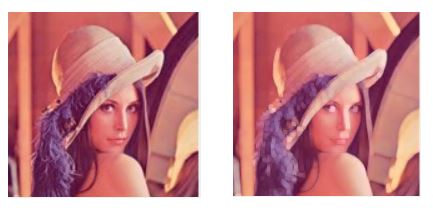

// filtr maks
for(int x = 1; x < colors.Length; x++)
{
if (colors[x].R > keepR) keepR = colors[x].R;
if (colors[x].G > keepG) keepG = colors[x].G;
if (colors[x].B > keepB) keepB = colors[x].B;
}

Przed i po zastosowaniu filtra maksymalnegoFiltr minimalny
// filtr min
for (int y = 1; y < colors.Length; y++)
{
if (colors[y].R < keepR) keepR = colors[y].R;
if (colors[y].G < keepG) keepG = colors[y].G;
if (colors[y].B < keepB) keepB = colors[y].B;
}
Przed i po zastosowaniu filtra minimalnegoFiltr medianowy
// mediana
List redList = new List();
List greenList = new List();
List blueList = new List();
for (int z = 0; z < colors.Length; z++)
{
redList.Add(colors[z].R);
greenList.Add(colors[z].G);
blueList.Add(colors[z].B);
}
redList.Sort();
greenList.Sort();
blueList.Sort();
keepR = redList[4];
keepG = greenList[4];
keepB = blueList[4];